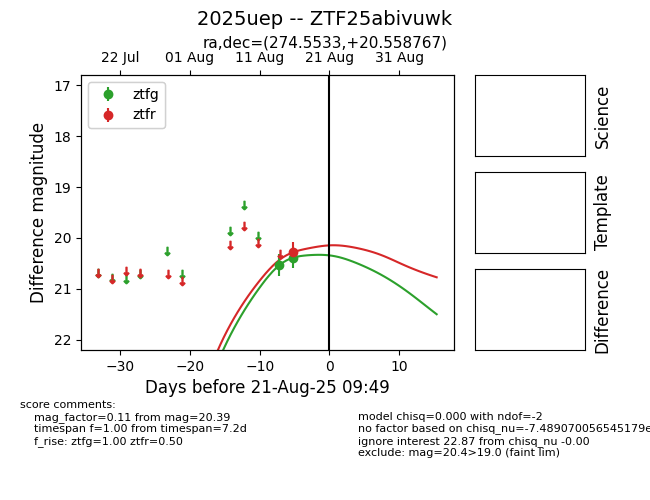

Target 2025uep at 2025-08-21 09:49, see:
FINK: fink-portal.org/ZTF25abivuwk
Lasair: lasair-ztf.lsst.ac.uk/objects/ZTF25abivuwk
ALeRCE: alerce.online/object/ZTF25abivuwk
TNS: wis-tns.org/object/2025uep
YSE: ziggy.ucolick.org/yse/transient_detail/2025uep
alt names
ZTF25abivuwk (ztf,alerce)
2025uep (tns,yse)
coordinates:
equatorial (ra, dec) = (274.5533,+20.55877)
galactic (l, b) = (48.0822,+16.29054)
photometry
last ztfg=20.39, ztfr=20.28
2 ztfg, 1 ztfr detections
